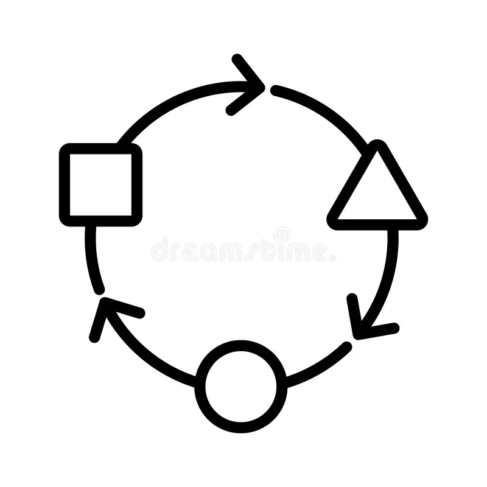

The Skills Shift
The Fourth Industrial Revolution is not just about technology; it is about how humans interact with that technology. As AI takes over routine manual and cognitive tasks, the value of uniquely human capabilities—empathy, complex problem solving, and ethical judgment—has skyrocketed.
STRATIV's Framework: We categorize future-readiness into three core dimensions: Technical Proficiency, Human Centricity, and Cognitive Agility. Mastery of these areas ensures that you are not just surviving the AI wave, but leading it.
Technical Skills
Understanding data analytics, basic programming, and AI-driven tools relevant to your specific industry.
LEARN MORESoft Skills
The "Human Advantage"—focusing on emotional intelligence, communication, and interpersonal leadership.
LEARN MOREDigital Literacy
Navigating the digital landscape safely and effectively, from cloud collaboration to cybersecurity awareness.
LEARN MORELifelong Learning
Cultivating a growth mindset to continuously acquire new knowledge as technology evolves.
LEARN MORECritical Thinking Skills
Analyzing information objectively and making reasoned judgments in an era of AI-generated content.
LEARN MOREProblem Solving Skills
Developing the ability to handle complex, non-routine challenges that require creative intervention.
LEARN MORE
Adaptability Skills
Staying resilient and flexible in the face of rapid organizational and technological changes.
LEARN MORETechnology Awareness
Keeping a pulse on emerging trends like Generative AI, Blockchain, and the Internet of Things (IoT).
LEARN MOREInnovation Skills
Leveraging creative thinking and new tools to develop unique solutions and drive progress.
LEARN MORECollaboration Skills
Working effectively within diverse teams, both in-person and in remote, AI-enhanced environments.
LEARN MOREThe Path to Mastery
Future-readiness is not a destination but a continuous journey. By balancing the technical foundations with the soft skills that define our humanity, professionals can create a sustainable career path in the age of AI.
View the Executive Skills Summary →